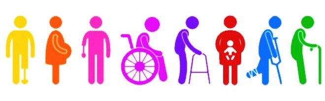
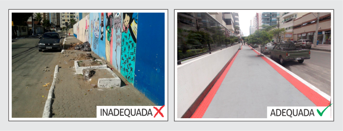
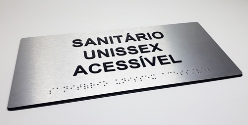
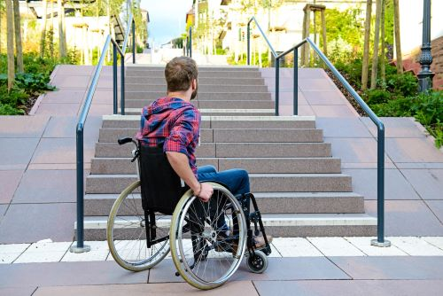

Acessibilidade no Ambiente Urbano: Desafios e Soluções
Nas complexas tramas urbanas, a acessibilidade é um fator determinante para a qualidade de vida e participação plena de todos os cidadãos. No entanto, o ambiente urbano muitas vezes apresenta desafios significativos que precisam ser enfrentados para garantir que as cidades sejam inclusivas e acolhedoras para todos.
Possíveis Soluções

Descrição de Imagem: Acessibilidade para Inclusão Social.
Descrição de Imagem: Acessibilidade para Inclusão Social.

Descrição de Imagem: Calçadas Inadequadas e Adequadas para Pessoas com Deficiência.
Descrição de Imagem: Calçadas Inadequadas e Adequadas para Pessoas com Deficiência.

Descrição de Imagem: Placa em Braille.
Descrição de Imagem: Placa em Braille.

Descrição de Imagem: Cadeirante com Dificuldade de Mobilidade nas Cidades devido a uma Escada.
Descrição de Imagem: Cadeirante com Dificuldade de Mobilidade nas Cidades devido a uma Escada.